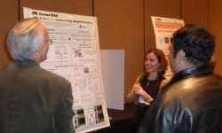

SIGSOFT 2012 / FSE-20
11-16 November 2012
Cary, North Carolina
Thanks
FSE-20 and its associated workshops have concluded.
Thank you to everyone who participated in the conference and the workshops, to our volunteers, to our sponsor ACM SIGSOFT, and to our supporters:
- ABB
- Microsoft Research
- IBM Research
Some photographs are already available.
Technical Program
FSE is recognized for the strength of its technical program, which is due to the quality of the submissions it attracts. As in previous years, we invited high-quality submissions describing significant, original, and unpublished results of theoretical and experimental software engineering research.
We received 201 submissions to FSE 2012. This was a record high for the FSE conference. After a thorough review process, the FSE program committee selected 35 papers for presentation at the conference in November. The list of accepted papers can be found here.
Research Tool Demonstrations and New Ideas papers were also selected; the list of accepted tool demonstrations can be found here and the accepted New Ideas papers can be found here.
Tevfik Bultan and Martin Robillard
FSE 2012 Program Co-Chairs
Workshops
Here are the workshops that were held in conjunction with FSE20:
- Java Pathfinder Workshop (JPF 2012): Sunday and Monday, 11 - 12 November
- International Workshop on Software Quality (WoSQ 2012): Monday, 12 November
- Software Engineering Educators Symposium (SEES): Monday, 12 November
- Symposium on Learning from Experiences in Software Engineering (SLESE 2012): Friday, 16 November
The workshops aimed to provide opportunities for exchanging views, advancing ideas, and discussing preliminary results in various areas of software engineering research and applications.
Three workshops had to be cancelled: the NSF Workshop: Planning Future Directions in Artificial Intelligence and Software Engineering (AISE'12), Enterprise-Aligned Software Engineering (EASE'12) and Web Quality, Security, and Testing 2012 (WebQUeST).
Jonathan Aldrich
FSE 2012 Workshop Chair
Welcome
ACM SIGSOFT 2012 (FSE-20) was held at the Embassy Suites in Cary, North Carolina (Research Triangle Park), USA. Located in a wooded setting just minutes from the Raleigh-Durham International Airport and near Duke University, North Carolina State, and the University of North Carolina at Chapel Hill, and over 20 computer-related industries, this year's venue provided a convenient, easily accessible and relaxing environment to present new ideas and share experiences.
Adam Lally, IBM Senior
Technical Staff Member on the DeepQA team that developed the Watson system,
was one of our keynote speakers, as were
Lori Clarke of UMass Amherst, and Chandrasekhar Boyapati of
Google, Sarfraz Khurshid of the University of Texas at Austin and
Darko Marinov of the University of Illinois at Urbana-Champaign.
From the SIGSOFT Past Chair
As Past Chair of ACM SIGSOFT, it was my pleasure to invite participation in the 20th annual offering of SIGSOFT's flagship conference, the core of which is the International Symposium on the Foundations of Software Engineering. Since its inception in 1993 at Redondo Beach, FSE has served the software engineering community as a leading venue for dissemination of the latest ideas and results from the broad range of software engineering research.
Will Tracz and his team produced an exciting week of keynotes, technical talks, workshops and other activities. I look forward to meeting you next time, at SIGSOFT 2014!
David Rosenblum